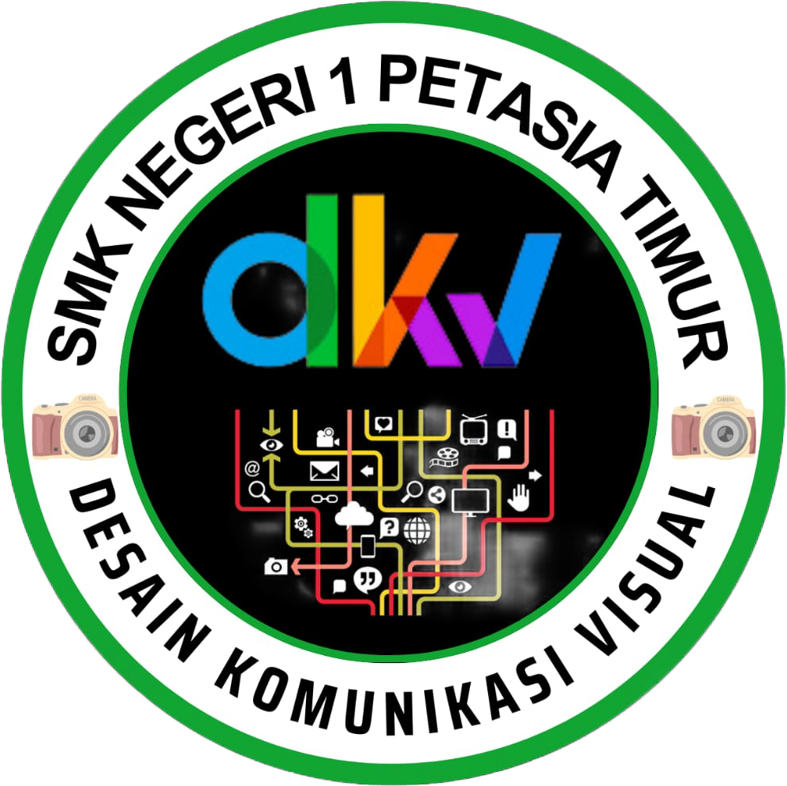
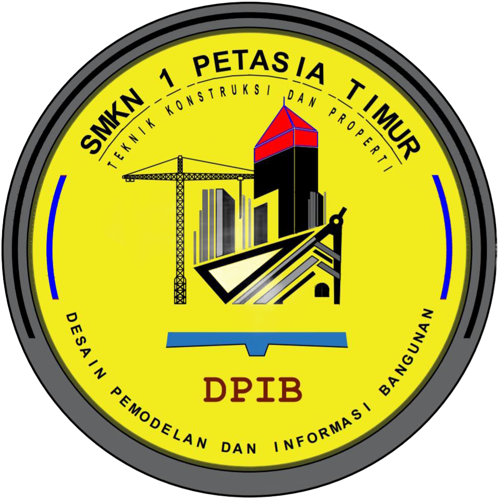
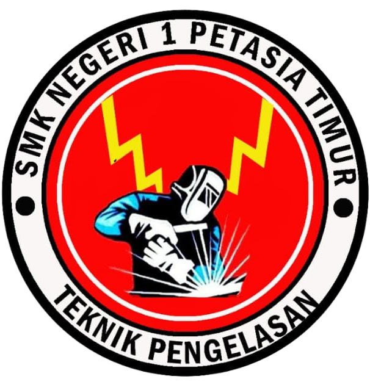

KOPETENSI KEAHLIAN

REKAYASA PERANGKAT LUNAK
Rekayasa perangkat lunak adalah proses pengembangan, pengoperasian, dan pemeliharaan perangkat lunak yang sistematis dan terukur. Tujuannya adalah untuk menghasilkan perangkat lunak yang dapat bekerja lebih efisien dan efektif untuk pengguna. Proses ini melibatkan analisis, desain, implementasi, pengujian, dan pemeliharaan sebuah perangkat lunak1. Rekayasa perangkat lunak dibuat untuk menghasilkan perangkat lunak yang bebas dari kesalahan, pengiriman yang tepat waktu, dan memuaskan keinginan pemakainya.

DESAIN KOMUNIKASI VISUAL
Jurusan Desain Komunikasi Visual (DKV) merupakan cabang ilmu desain yang mempelajari tentang konsep komunikasi dan ungkapan kreatif, teknik, serta media dengan memanfaatkan elemen-elemen visual atau rupa dalam menyampaikan pesan untuk tujuan persuasi yakni mempengaruhi perilaku. Program studi ini biasanya ditawarkan di jurusan seni dan desain, dan berfokus pada pengembangan keterampilan teknis dan pemahaman estetika untuk menciptakan karya seni yang berkualitas tinggi.

TEKNIK ALAT BERAT
Apa Itu Jurusan Teknik Alat Berat Jurusan Teknik Alat Berat merupakan jurusan yang mempelajari tentang mesin-msein berat yang ada di dalam kegiatan konstruksi dengan menerapkan Ilmu Fisika. Di dalam jurusan ini, kamu akan belajar tentang teknik perancangan, produksi alat berat, dan juga cara perawatannya.....

DESAIN PERMODELAN Dan INFORMASI BANGUNAN
Desain Pemodelan dan Informasi Bangunan adalah jurusan yang mempelajari tentang perencanaan bangunan, pelaksanaan pembuatan gedung dan perbaikan gedung. Kegiatannya adalah belajar menggambar/Desain rumah, gedung dan apartemen, melaksankan pembangunan dan memelihara kontruksi bangunan....

TEKNIK PENGELASAN
Apa itu Teknik Pengelasan?
Jurusan teknik pengelasan mempelajari pekerjaan pengelasan pada bahan besi atau baja, hampir seluruh logam dalam proses produksinya harus dilakukan pengelasan
Program Pendidikan: 3 tahun
Kemajuan Teknologi pengelasan akhir-akhir ini sangatlah membantu dalam pekerjaan pembuatan konstruksi baik yang sederhana maupun konstruksi yang mempunyai tingkat kesulitan dan persyaratan tinggi. Pengelasan merupakan bidang yang sangat dibutuhkan oleh Dunia Industri utamanya untuk industri perkapalan dan rekayasa umum serta bidang-bidang lain yang berhubungan dengan penyambungan konstruksi dimana pengelasan merupakan faktor utamanya....